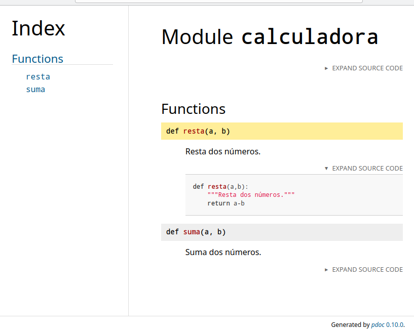
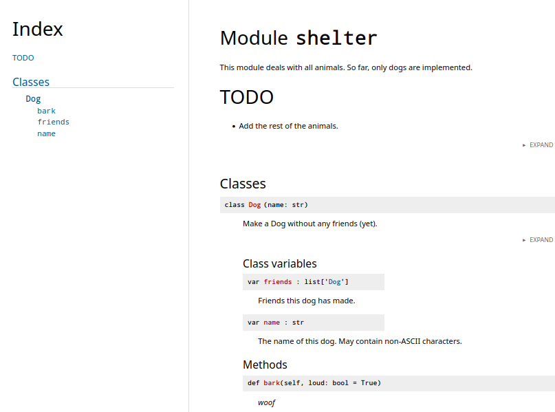
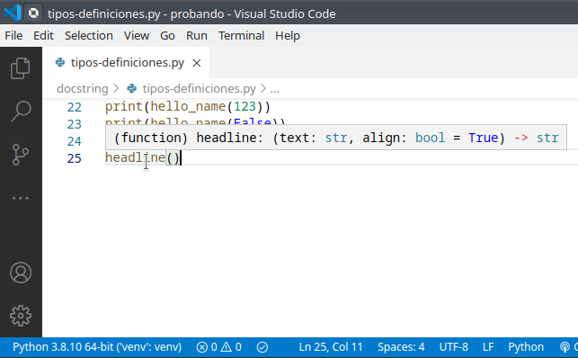
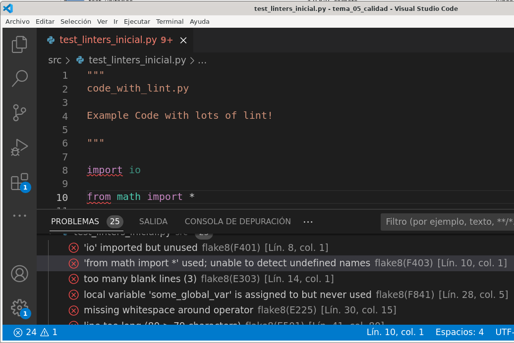
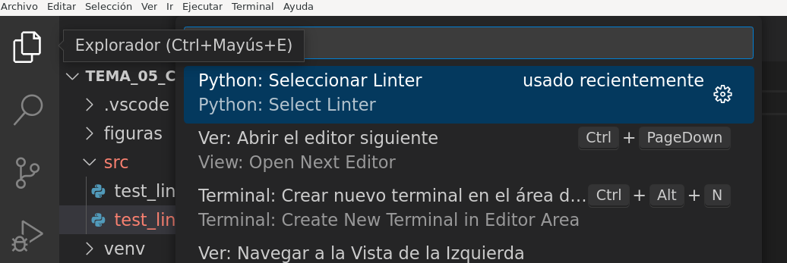
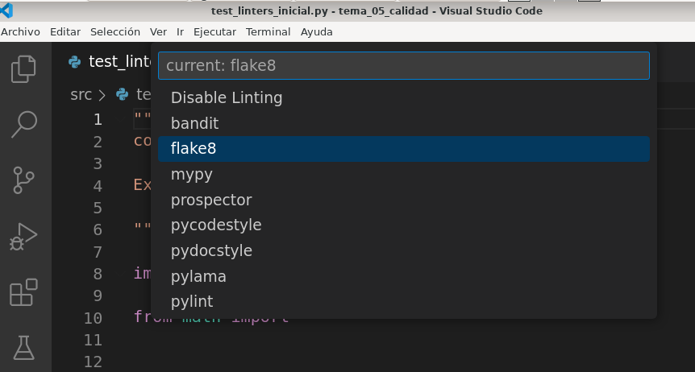

Calidad y documentación del código
1. Documentación en Python
“Code is more often read than written.”
Guido van Rossum
1.1. Comentar vs documentar el código
Hay que diferenciar documentar de comentar.
-
Comentar el código
- Propósito: Notas rápidas para el programador en el futuro o compañeros, desactivar código temporalmente, explicar decisiones de diseño.
- Dónde: Directamente en el archivo fuente.
- Cuándo: Solo cuando el código no es lo suficientemente claro por sí mismo, para lógica compleja, o por razones legales/licencias.
- Evita comentarios obvios ("// sumar dos números") o desactualizados, que son ruido y engañan.
-
Documentar el código
- Propósito: Explicar el funcionamiento general, arquitectura, API, y cómo usar el software a otros desarrolladores o usuarios finales.
- Dónde: Archivos README, Wikis,herramientas de generación de documentación o comentarios en formato especial.
- Cuándo: Siempre es necesario para proyectos compartidos o públicos.
- Herramientas: Usar generadores que extraen información de comentarios bien formateados para crear manuales.
En python los comentarios se inician con el carácter #
1.2. Generando la documentación
Gracias a los docstrings y sus formatos existe la posibilidad de generar la documentación de un proyecto, modulo, clase, etc. de forma automática a partir del código. Hay diferentes soluciones y una de ellas es el módulo pdoc3.
Para ver su funcionamiento deeb instalar dicho modulo en un entorno virtual:
(venv) clases@d12:~/PPS/calidad/src_doc$ pip install pdoc3
Collecting pdoc3
Downloading pdoc3-0.10.0-py3-none-any.whl (135 kB)
|████████████████████████████████| 135 kB 3.6 MB/s
....
Installing collected packages: MarkupSafe, mako, zipp, importlib-metadata, markdown, pdoc3
Successfully installed MarkupSafe-2.0.1 importlib-metadata-4.8.2 mako-1.1.6 markdown-3.3.6 pdoc3-0.10.0 zipp-3.6.0
(venv) clases@d12:~/PPS/calidad/src_doc$pdoc3 --version
pdoc3 0.10.0
(venv) clases@d12:~/PPS/calidad/src_doc$
Si lo invoca con el módulo calculadora (o cualquier otro de los ejemplos previos) muestra en la salida estándar la documentación generada en base a los docstrings presentes en el código:
(venv) clases@d12:~/PPS/calidad/src_doc$ cat calculadora.py
def suma(a:int,b:int) ->int:
return a + b
def resta(a,b):
""" Resta dos numeros."""
return a-b
(venv) clases@d12:~/PPS/calidad/src_doc$ pdoc3 calculadora
Module calculadora
==================
Functions
---------
`resta(a, b)`
: Resta dos numeros.
`suma(a: int, b: int) ‑> int`
:
(venv) clases@d12:~/PPS/calidad/src_doc$
Es más interesante generar dicha documentación en formato HTML con la opción --html
Observe que se generan títulos, un índice, documentación a partir de los docstring, etc. Ademaś permite ver el código con el desplegable "Expand Source Code":

Observe un ejemplo de un módulo con una clase:
""" This module deals with all animals. So far, only dogs are implemented.
# TODO
- Add the rest of the animals.
"""
from __future__ import annotations
class Dog:
name: str
"""The name. May contain non-ASCII characters."""
friends: list ["Dog"]
"""Friends this dog has made."""
def __init__(self, name: str):
"""Make a Dog without any friends (yet)."""
self.name = name
self.friends = []
def bark(self, loud: bool = True):
"""*woof*"""
Y cómo se genera la documentación por pdoc3 en formato HTML:

1.3. Comentar código con anotaciones (Type Hinting)
Es posible añadir información sobre los tipos de los argumentos o el valor de retorno en el propio código. Esto se logra con las anotaciones de tipo (type hint). Pero tenga en cuenta que estas anotaciones no implican comprobación de tipos al ejecutar.
Para añadir anotaciones de tipo
- en los argumentos: tras el argumento el caracter ":" y el tipo del argumento.
- en el valor de retorno: tras el paréntesis de cierre de los argumentos una flecha "->"y el tipo de retorno.
Observe anotaciones en este ejemplo
# función sin tipos..
def hello(name):
return(f"Hello {name}")
#funciones con tipos de parámetros y tipo retorno
def hello_name(name: str) -> str:
return(f"Hello {name}")
def headline(text: str, align: bool = True) -> str:
if align:
return f"{text.title()}\n{'-' * len(text)}"
else:
return f" {text.title()} ".center(50, "o")
- Mejorar la documentación del código
- Que herramientas como un editor, a la hora de añadir una llamada a una función nos de una ayuda visual sobre la misma y los tipos esperados:

1.4. Ejercicio: generar documentación
- Recuperar o crear el módulo
calculadoradel ejercicio planteado en el tema de test de integración. -
Documentar ese módulo con docstrings. Documentar los argumentos de las funciones y los valores de retorno de los dos métodos usando dos formatos distintos (ver anexo):
-
formato de Google.
- formato de numpy.
Nota: Puede usar pdoc3 en modo servidor con la opción --http localhost:8080 y editar y ver los cambios en la documentación:
(venv) @tos:~/docstring$ pdoc3 --http localhost:8080 calculadora
Starting pdoc server on localhost:8080
pdoc server ready at http://localhost:8080
...
1.5. Enlaces adicionales
- PEP 257 – Docstring Conventions: https://www.python.org/dev/peps/pep-0257/
- Syntax and best practices for docstrings used with the numpy: https://numpydoc.readthedocs.io/en/latest/format.html
- Google Comments and Docstrings: https://google.github.io/styleguide/pyguide.html#38-comments-and-docstrings
- PEP 484 – Type Hints: https://peps.python.org/pep-0484/
- Documenting Python: A Complete Guide: https://realpython.com/documenting-python-code/?utm_source=pocket_mylist
2. Calidad en el código
El código se considera de calidad si:
- Hace lo que se supone que debe hacer
- No contiene fallos o da problemas.
- Es sencillo de leer, mantener y modificar para añadir mejoras.
Es en ese tercer apartado en el que nos centramos en este documento.
2.1. Guías de estilo
La guía fundamental es la Python Enhancement Proposal 8 o PEP-8 que presenta las directrices a seguir para escribir código Python.
Se indican cuestiones como: - Usar 4 espacios en el sangrado del códigoy no usar tabuladores. - Una longitud máxima de 79 caracteres en cada línea. - Sobre las líneas en blanco: - Rodear las funciones de primer nivel y clases con dos líneas en blanco - Los métodos dentro de una clase con una única linea en blanco - Imports: - Normalmente en líneas separadas - Primero los estándar, luego módulos de terceros, luego los propios - etc.
Adicionalmente hay otras guías de estilo especificas para empresas, por ejemplo la de Google.
2.2. Comentarios y documentación
Se ha trabajado este apartado previamente: uso de docstrings, type hint y la herramienta pdoc3.
2.3. Linting y linters
Hay un cierto grupo de errores que pueden ser identificados y reparados antes de que tu código llegue a ser ejecutado. Estos podrían ser:
- Errores de sintaxis.
- Código poco intuitivo o difícil de mantener.
- Uso de "malas practicas".
- O uso de estilos de código inconsistentes.
Las herramientas que revisan tu código para buscar estos errores o malas prácticas se llaman linters. En el caso de Python hay varios disponibles:
- Flake8
- Pylint
- PyFlakes
- ...
Flake8 is a Python library that wraps PyFlakes, pycodestyle and Ned Batchelder's McCabe script. It is a great toolkit for checking your code base against coding style (PEP8), programming errors (like “library imported but unused” and “Undefined name”) and to check cyclomatic complexity.
A continuación:
- Se parte de un fichero con errores:
test_linters_inicial.py. - Se crea un entorno virtual e instala el linter
flake8(opcionalpylint) - Se prueba el linter desde la línea de comandos.
- Se prueba el linter desde Visual Studio Code.
- Se aprende lo básico sobre su uso y configuración
2.3.1. Instalación
- Crear y activar un entorno virtual
- Instalar
flake8
2.3.2. Ejecución en CLI
Como parámetro se le indica a flake8 el fichero a revisar:
(venv) @tos:~/calidad$ flake8 test_linters_inicial.py
test_linters_inicial.py:8:1: F401 'io' imported but unused
test_linters_inicial.py:10:1: F403 'from math import *' used; unable to detect undefined names
test_linters_inicial.py:14:1: E303 too many blank lines (3)
test_linters_inicial.py:28:5: F841 local variable 'some_global_var' is assigned to but never used
test_linters_inicial.py:30:15: E225 missing whitespace around operator
test_linters_inicial.py:41:80: E501 line too long (80 > 79 characters)
test_linters_inicial.py:51:10: E711 comparison to None should be 'if cond is not None:'
test_linters_inicial.py:55:25: E703 statement ends with a semicolon
test_linters_inicial.py:63:23: E275 missing whitespace after keyword
test_linters_inicial.py:63:24: E201 whitespace after '('
test_linters_inicial.py:66:13: E303 too many blank lines (2)
test_linters_inicial.py:72:58: E251 unexpected spaces around keyword / parameter equals
test_linters_inicial.py:74:28: E221 multiple spaces before operator
...
(venv) @tos:~/calidad$
Observe como para cada posible error se muestra
- el fichero, con línea y columna,
- el código del error
- y una breve descripción de ese código de error
Por ejemplo, en la línea 28 detecta el error F481: a la variable some_global_var se le asigna un valor pero no es usada posteriormente. No genera error en ejecución, pero es evidente que se ha olvidado usarla (o sobra esa variable).
Hay también errores de formato: líneas de más de 79 caracteres, demasiados espacios después de un operador, etc.
Los códigos de error se pueden consultar en la documentación oficial. Y en este enlace tiene ejemplos descriptivos de los mismos.
2.3.3. Usando el linter en el editor
A veces sera'más comodo utilizar el linter al mismo tiempo que editamos el código. Se muestra cómo hacerlo en VScode.
Primero instale la extensión Flake8 de Microsoft (Linting support for Python files using Flake8).
Ahora al editar algún fichero python se marcan los errores de linting que proporciona flake8: * En la ventana de edición se señalan, * y también los puede consultar en la ventana de problemas:

Nota obsoleta: en vesiones anteriores de Python/Vscode era necesario seleccionar el linter a utilizar en las opciones de VScode. Para ello se accedía a Ver / Paleta de Comandos / Python: Seleccionar Linter y elegir flake8 como se ve en estas figuras. Primero accedemos a la paleta de comandos

Y una vez localizdo Python: Seleccionar linter elegimos flake8

Puede desactivar el linter accediendo de nuevo a la selección del linter y seleccionando la opción "disable linting"
2.3.4. Uso ignore, select y fichero configuración
Los códigos de error le pueden ser de utilidad al usar el linter. Por ejemplo, si solamente queremos revisar un error en particular usamos --select y se le indican los códigos de error a revisar:
De forma similar, si quiere ignorar algunos de ellos puede usar la opción --ignore :
Tiene por otra parte la posibilidad de crear un fichero de configuración. En ese caso las opciones tienen como orden de prioridad la línea de comandos, luego el fichero de configuración y finalmente los valores por defecto.
flake8 permite almacenar la configuración en lo ficheros setup.cfg o tox.ini, o .flake8.
Como ejemplo puede crear un fichero tox.ini en la raiz del proyecto con el siguiente contenido:
Si ejecuta flake8 los errores indicados en ignore ya no se muestran:
(venv) @tos:~/calidad$ flake8 test_linters.py
test_linters.py:8:1: F401 'io' imported but unused
test_linters.py:63:24: E201 whitespace after '('
test_linters.py:72:58: E251 unexpected spaces around keyword / parameter equals
test_linters.py:76:31: E222 multiple spaces after operator
...
(venv) @tos:~/calidad$
Para tener más información sobre flake8:
- Documentación oficial
- Opciones de flake8: https://flake8.pycqa.org/en/latest/user/options.html
- Códigos de error: https://flake8.pycqa.org/en/latest/user/error-codes.html
- Descripción con ejemplos de los códigos de error: https://www.flake8rules.com/
Aviso: Por defecto, si la opción
ignoreno aparece en CLI ni en fichero de congiguración los códigos de error E123/E133, E226 y E241/E242 son ignorados.
2.4. Ejercicio
Utilizar la herramienta flake8 con el código de los ejemplos y ejercicios de clase. Revisar y corregir los errores que muestra.
2.5. Enlaces
- PEP-8 Style Guide for Python Code: https://peps.python.org/pep-0008/ o https://pep8.org/
- PEP-8 en castellano: http://mundogeek.net/traducciones/guia-estilo-python.htm
- Explicación (Escribiendo Código Fácil de Lee): https://ellibrodepython.com/python-pep8
-
Guía estilo Google Python: https://google.github.io/styleguide/pyguide.html
-
Enlaces de ampliación
- Escribiendo código de alta calidad en Python (2020)
- Python Code Quality: Tools & Best Practices
- Linters en VSCode
3. Anexos
3.1. linter pylint
El objetivo es conocer los linters y su uso básico, y con uno de ellos es suficiente. Pero si lo desea puede probar pylint también.
Se instala y se invoca de forma similar a flake8
(venv) @tos:~/calidad$ pip install pylint
(venv) @tos:~/calidad$ pylint test_linters_inicial.py
************* Module test_linters_inicial
test_linters_inicial.py:55:0: W0301: Unnecessary semicolon (unnecessary-semicolon)
test_linters_inicial.py:63:0: C0325: Unnecessary parens after 'return' keyword (superfluous-parens)
test_linters_inicial.py:66:0: C0325: Unnecessary parens after 'return' keyword (superfluous-parens)
test_linters_inicial.py:86:0: C0304: Final newline missing (missing-final-newline)
test_linters_inicial.py:10:0: W0622: Redefining built-in 'pow' (redefined-builtin)
test_linters_inicial.py:10:0: W0401: Wildcard import math (wildcard-import)
....
-----------------------------------
Your code has been rated at 0.00/10
Si lo desea, más información sobre el uso de pylint:
- https://pylint.pycqa.org/en/latest/user_guide/run.html
- https://learn.adafruit.com/improve-your-code-with-pylint/pylintrc
3.2. Documentar el código usando docstrings
El interprete de comandos python proporciona ayuda sobre comandos, clases, etc. usando help():
>>> help(str)
Help on class str in module builtins:
class str(object)
| str(object='') -> str
| str(bytes_or_buffer[, encoding[, errors]]) -> str
|
| Create a new string object ....
| ....
>>>
str con dir()
Para obtener ayuda del método split:
>>> help(str.split)
Help on method_descriptor:
split(self, /, sep=None, maxsplit=-1)
Return a list of the substrings in the string, using sep as the separator string.
...
Dentro de esa información se encuentra el atributo __doc__ que almacena esa información . Si accede a dicho atributo se muestra la ayuda de dicho objeto:
>>> print(str.__doc__)
str(object='') -> str
str(bytes_or_buffer[, encoding[, errors]]) -> str
Create a new string object from the given object. If encoding or
...
>>>
En el caso de split:
>>> print(str.split.__doc__)
Return a list of the substrings in the string, using sep as the separator string.
sep
The separator used to split the string.
...
>>>
Es decir, si tiene una clase o una función puede crear o modificar el atributo .__doc__ y estaría generando el docstring de la ayuda.
En el siguiente ejemplo se crea una función y modifica .__doc__
>>> def hola(name):
... print(f"hola {name}. Bienvenido")
...
>>> hola.__doc__ = "Funcion que saluda con nombre"
>>> help(hola)
Help on function hola in module __main__:
hola(name)
funcion que saluda con nombre
(END)
>>>
Evidentemente este método de trabajo (modificar el atributo __doc__) no es práctico para documentar. En su lugar es preferible usar comentarios en el código siguiendo un determinado formato.
Observe en el siguiente ejemplo un comentario justo al inicio de la función. Si lo añade de esa forma se le asigna de froma automática al atributo .__doc__:
>>> def hola(name):
... """ Funcion que saluda con parametro nombre."""
... print(f"hola {name}. Bienvenido")
...
>>> help(hola)
Help on function hola in module __main__:
hola(name)
Funcion que saluda con parametro nombre.
(END)
>>>
En el siguiente apartado se muestra que son los docstrings y cómo utilizarlos.
3.3. Docstrings
A docstring is a string literal that occurs as the first statement in a module, function, class, or method definition. Such a docstring becomes the
__doc__special attribute of that object.Docstring conventions are described within PEP 257 (Python Enhancement Proposals) https://www.python.org/dev/peps/pep-0257/
Por lo tanto es un literal que debe aparecer en la primera línea del módulo, clase o función. Al aparecer en ese lugar se convierte en el atributo__doc__ . Pueden ser de una línea o multilínea.
3.3.1. Docstrings de una línea
Deben cumplir:
- Una única línea
- Empezar con mayúscula,
- Terminar en punto.
- Sin líneas en blanco ni antes ni después.
3.3.2. Docstrings multilínea
Si la ayuda necesita de más texto el formato debería ser:
- Una primera línea con el resumen de la ayuda
- Una línea en blanco
- Texto con la descripción en varias líneas
- Se cierra el literal
- Y una línea en blanco tras el literal
Observe este ejemplo tomado de una función especificando los parámetros y el valor de retorno:
"""Gets and prints the spreadsheet's header columns
Parameters
----------
file_loc : str
The file location of the spreadsheet
print_cols : bool, optional
A flag used to print the columns to the console (default is False)
Returns
-------
list
a list of strings representing the header columns
"""
3.4. Clasificación por tipos
Se pueden clasificar los docstrings en función de que se apliquen a paquetes o módulos, clases o scripts. Por ejemplo, en el caso de los módulos se considera que deberían contener:
- un breve resumen de propósito y comportamiento
- Los métodos públicos con una breve descripción
- Las propiedades (atributos) de la clase
- ...
Tiene información más detallada en este enlace: https://realpython.com/documenting-python-code/#docstring-types
3.5. Clasificación por formatos o normas de estilo
Resulta que existen distintas "maneras" de organizar la información dentro del docstring. Algunos de estos formatos posibles son:
| Formatting Type | Description |
|---|---|
| NumPy/SciPy docstrings | Combination of reStructured and GoogleDocstrings and supported by Sphinx |
| PyDoc | Standard documentation module for Python and supported by Sphinx |
| EpyDoc | Render Epytext as series of HTML documents and a tool for generating API documentation for Python modules based on their Docstrings |
| Google Docstrings | Google's Style |
Vea como ejemplo la diferencia entre dos de ellos, NumPY y Google. Con el formato de Google el docstring de un método o función sería similar a:
"""Gets and prints the spreadsheet's header columns
Args:
file_loc (str): The file location of the spreadsheet
print_cols (bool): A flag used to print the columns to the console
(default is False)
Returns:
list: a list of strings representing the header columns
"""
Con Pynum la forma de especificar los parámetros y el valor de retorno es diferente: